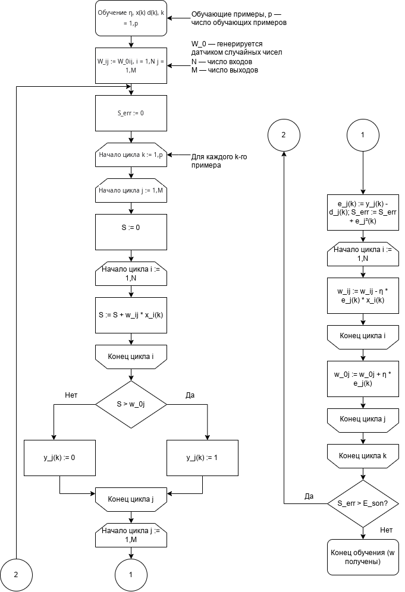

14 февраля 2026
Топ-3 предсказаний: running shoe: 99.45% shoe store: 0.27% clogs: 0.15% Топ-3 предсказаний: bison: 50.56% hyena: 10.53% llama: 6.75% Топ-3 предсказаний: acoustic guitar: 91.21% electric guitar: 4.73% cello: 3.16%16 февраля 2026
Вопрос пользователя: Сколько ждать мой заказ? Найден FAQ-вопрос: Как оплатить заказ? (sim=0.719) Ответ бот-FAQ: Вы можете оплатить заказ онлайн через наш сайт или при получении.18 февраля 2026
with open("/home/user/2025/201C/Enigme1.txt", "r") as f: encoded_data = f.read().strip() decoded_message = ''.join(chr(int(code)) for code in encoded_data.split()) print(decoded_message) У каждого поколения есть свой философ, писатель или художник, который захватывает и воплощает в себе идею времени. Иногда эти философы получают признание при жизни, но чаще всего им приходится ждать, пока на них наложит свой отпечаток время. Независимо от того, будет ли это признание немедленным или запоздалым, эпоха отмечена этими людьми, выражающими свои идеалы в шепоте стихов или в грохоте политического движения. У нашего поколения есть философ. Он не художник и не писатель. Он программист.21 февраля 2026
Соответствие букв и цифр: D = 7 E = 5 M = 1 N = 6 O = 0 R = 8 S = 9 Y = 2 Проверка: 9567 (SEND) + 1085 (MORE) ------ 10652 (MONEY)25 февраля 2026
0.004166666666666667 4.166666666666667 4.17 -0.0033333333333329662 3333.333333332966 0.008000000000000007 0.008 Честное округление (Random Error): 4.162 -> 4.16 (остаток: +0.00200) 4.168 -> 4.17 (остаток: -0.00200) 4.174 -> 4.17 (остаток: +0.00400) 4.179 -> 4.18 (остаток: -0.00100) Усечение / Truncation (Systematic Bias): 4.162 -> 4.16 (остаток: +0.00200) 4.168 -> 4.16 (остаток: +0.00800) 4.174 -> 4.17 (остаток: +0.00400) 4.179 -> 4.17 (остаток: +0.00900)7 марта
Нажмите, чтобы скачать или открыть презентацию: Праздничная презентация18 марта
Студент занимался 5 часов Прогноз баллов: 76.4021 марта
0.69 ИТОГОВАЯ ТОЧНОСТЬ МОДЕЛИ: 100.00%23 марта
Ошибка на обучении (MSE): 0.01911675618660641 Ошибка на тесте (MSE): 0.025744155921950018 === РЕЗУЛЬТАТЫ С 4 ПРИЗНАКАМИ === Ошибка на обучении (MSE): 0.008628450309747055 Ошибка на тесте (MSE): 0.010729224686258814 алгоритм нейросети неинтопретируем на человеческом уровне28 марта
Нажмите, чтобы скачать или открыть изображение: